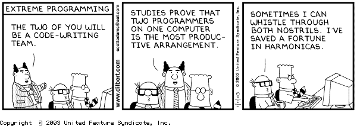

July 3rd - 2014 : Asking Good Questions

We've all then there. Asking questions on some forum because we can't quite solve the problem we're stuck on.
I've asked several questions on stackoverflow now and I can attest that getting answers to a poorly worded question
or a question which is lacking information is near impossible.
It can be frustrating reaching out to the community for help to only get snarky responses or worse no response at
all. It can also be a little embarrassing to ask a question to only find the answer in another post minutes later.
It's important as developers to develop our question asking skills as they often make the difference between getting
positive, quick responses to our questions that help us grow and gain knowledge. In today's post we're going to
dive into the topic of asking good and correct questions.
Continue Reading
July 1st - 2014 : Dealing with Conflict

Dealing with conflict can be a very difficult thing and something that can leave us broken,
diminished, unhappy, or disengaged from our work. But if handled well, can also help us
better understand ourselves, help us grow, bring us closer together as a team, and to help
us see other's view points more rapidly.
Todays blog is all about dealing with conflict and how I myself have dealt with it in the
past.
Continue Reading
July 1st - 2014 : Active Record

What is Active Record?
Active Record at it's simplest is an ORM or "Object Relational Mapping". It sits between
your database and your code and maps your database to your code.
Active Record also links directly to the "Model" in Model, View, Controller(MVC) of the Rails
framework.
With Active Record, we model our data with classes within Ruby. These classes are then used
by Active Record to create and update the database for us. There is no need to open up SQL
and create tables. There are many built in methods that allow for easy schema maintenance.
Continue Reading
June 30th - 2014 : Blog Redisgn

The Challenge
I'm in the final stretch for my phase 0 prep work for DBC. These last two weeks are all about
review and we have some freedom to choose what we work on. One of those options was to update the
design of our personal github.io websites that we use to blog.
I've been pretty satisfied with my layout but there have been some things bothering me about the
design since I got it up and running back in week 2. That seems forever ago now. Here is the list
of things that were bothering me and what I did to address them.
Continue Reading
June 29th - 2014 : SQL vs NoSQL

SQL or Relational Database Management Systems
Structured and Relational, SQL databases group their data together into logical tables.
A person has a name, age, weight, height, hair color, etc. so in SQL we structure a
person as a table in the database where there are columns for each characteristic of
that person. You can then have a new person for each row in the person table.
SQL databases also rely heavily on having identity columns in a table so that each row
in a table becomes unique. This also has the added advantage of being able to relate
data in one table to data in another.
Continue Reading
June 29th - 2014 : Affirmation and Stereotype Threat

Exploring my values
Having a family, Inner harmony, Meaningful work. These are the three key values that
jumped out at me as I read through the list. Looking back at my 35 years on this earth
I can see that times that I was the most happy was when these three values aligned.
Of the three values that stand out, I've decided to write a few sentences on having a
family. I've been a husband for 10 years now and a father for 8. My extended family is
large and close. I can't think of a single major milestone in my life where family was
not involved in either getting me there are celebrating my success at the end.
Continue Reading
June 22nd - 2014 : Ruby Classes & Modules
For this weeks technical blog post I've decided to go over the difference between
Ruby classes and modules. There is much confusion between the difference and when
to use one or the other. I hope by the time you are done reading, you will have a
better understanding of the two and when to use them. If you haven't already, take
a second to review the first image above this paragraph and then lets start with the
Ruby class.
Continue Reading
June 22nd - 2014 : Stereotype Threat

I'm white, nerdy, and an introvert. I'll let that sink in for a moment. I'm
white, nerdy, and an introvert. Can you think of some characteristics for these
things that I identify as? I know I can and no I don't dress up like a character
from Star Wars or Star Trek and attend conventions on the weekends. I don't live
in my mother's basement. But I am working towards being a software engineer though so
you got me there.
Continue Reading
June 15th - 2014 : Ruby Classes

Everything is an object in Ruby. All the way down to numbers and strings. And that is a
great way to look at it too because everything inherits from object. Object is the root
Ruby class that everything is built on.
For that is what an object is, a Ruby class. A class describes what an object is, what it
can do, how it works. This fundamental construct is the basis of all object oriented programming
languages. It is this ability to define classes or objects that gives the ability to model
real world objects and ideas. It is also the power and grace behind object oriented programming.
Continue Reading
June 15th - 2014 : Pair Programming & Feedback

Coming into DBC, pair programming was my biggest fear. Being a bit of an introvert, I had nightmares
about how I would be able to take all the social interaction. Especially over the Internet with people
that I had never met before.
I also feared looking like an idiot in front of my classmates. I have a tendency to avoid situations
where I can look stupid so pairing scared me. I can handle the home work, the schedule, the dedication,
and pretty much anything else you throw at me but pairing is Kryptonite.
Continue Reading
June 8th - 2014 : Ruby Loops
Ruby must take the crown for number of ways to loop. The Ruby landscape it ripe with
a million ways to iterate over stuff. I imagine in my mind, a mom with a bag of froot
loops, driving her minivan trying to hand the bag back to her two year old son in the
back seat. "I only want red!", he yells at her as froot loops fall over the floor, in
his seat, and on mom's lap. The blue and green loops will soon be crushed under foot
by the family, the purples ones lost to the void that is the cracks of the car seats,
the yellows ones rolled to the abyss under the car seats.
Continue Reading
June 8th - 2014 : Women in tech

The topic I've chosen for this weeks cultural blog scares me. It's a topic I've seen in news in
varying degrees over the past several years. It usually goes something like this. "Ms. Female
programmer quit her job at x tech company today citing harassment, bullying, and general hate as
her reason for leaving. CEO of x tech company had little to say on the matter other than the
employees at fault were told to be better but all is well because crazy Ms. Female programmer finally
left the company like they wanted in the first place."
The astounding number of news articles and blog posts that all follow this pattern is staggering.
I can't even begin to fathom a culture that could get this bad. Is there no repercussions for treating
a person like the tech world seems to do to women on a daily basis? How can this type of thing
continue to be common place?
Continue Reading
June 1st - 2014 : JavaScript Awesomness!
The Buzz...
JavaScript seems to be the buzz word in web development now a days. The language has become very popular over the past couple of years, that you can't really get away from it even if you wanted to. Most, if not all, major backend technologies have implemented some form or another of the language into their boilerplate front end code.
There is literaly a sea of JavaScript libraries out there today. From jQuery to coffee script there are to many to count or list. I would suspect that a search on GitHub would show that JavaScript is one of, if not, the most used language out there today. 2013 Github Stats
Continue Reading
June 1st - 2014 : My Mind Styles
The Mind Style model created by Anthony Gregorc is a well known way of how to consider the way the mind works.
Through a simple test, one can determine a thinking style for themselves based upon 4 qualities or abilities. These "abilities" describe how a person perceives and organizes information.
Continue Reading